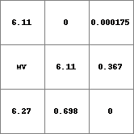
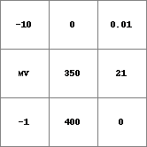
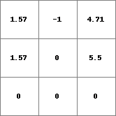
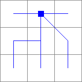

directional
Data conversion to the directional data type
Result = directional(expression)
--degrees or --radians
If expression is a PCRaster map or an calculation resulting in a PCRaster map, it is converted: if expression is of one of the data types boolean, nominal, ordinal, scalar the cell values on expression are converted to the circular scale of Result, on a cell-by-cell basis. If expression is of the data type ldd, the codes on expression representing local drain directions are converted to real directions of drainage and saved as Result. The directions are converted to the circular scale of Result clockwise, assigning 0 degrees (or radians if the option --radians is set) to cells with a local drainage towards the top of the map (ldd code 8). A flat cell (cell value 5 on expression) is assigned a -1 on Result. The command can also generate a map of directional data type with one constant value.
If expression has no PCRaster data type, a Result with data type directional is generated. This is the case if expression is a number or a calculation with numbers. The value of expression must be in the domain of the directional data type, i.e. if the option --degrees is set: equal to 0 or between 0 and 360; if the option radians is set equal to 0 or between 0 and 2pi. Result will be a map with the same location attributes as the global clone map; all cells will have the value of expression.
A cell with missing value on expression is assigned a missing value on Result.
This operation belongs to the group of Conversion and assignment
| Result2.map | Expr.map |
|  |  |
| Result1.map | Expr.map |
|  |  |